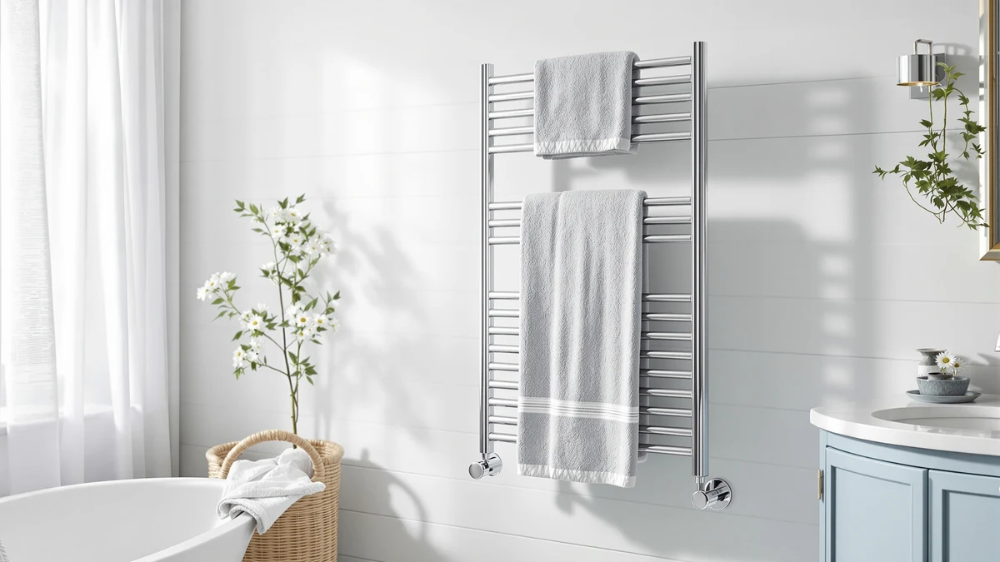

The Best Luxury Towel Warmers (2026)
Prices and picks verified as of August 2026. Independent, reader-supported reviews.


Quick Answer
The CWDOlROI Towel Warmer 20L Large is our top pick among the best luxury towel warmers, pairing a roomy 20-liter stainless steel bucket with a price that undercuts several smaller rivals in this guide. If you want more capacity and a design that folds away, the CNZHONGYINI 35L Foldable Towel Warmer is the strongest runner-up.
Our pick: CWDOlROI Towel Warmer 20L Large — $79.98 Check Price on Amazon
Bottom line: our top pick is the CWDOlROI Towel Warmer at $79.98. The best budget option is the CNZHONGYINI 35L Foldable Towel Warmer Bucket for Bathroom at $59.99.
Things to Know Before You Buy
- Capacity ranges from 20 to 35 liters. Among the best luxury towel warmers in this guide, bucket size varies from the CWDOlROI's 20-liter interior to the CNZHONGYINI's 35-liter foldable design, and that liter figure roughly tracks how large a towel or robe fits comfortably.
- Every pick here uses stainless steel. Stainless steel resists the corrosion that cheaper finishes develop once a warmer runs for an hour or more after every shower in a humid bathroom.
- WiFi adds convenience, and cost. The SereneLife WIFI Luxury Rectangle Towel lets you schedule warm-up times from an app, a feature the other picks skip in favor of a simple manual dial. See our best WiFi towel warmers guide for more app-connected options.
- Foldable buckets trade rigidity for storage. The CNZHONGYINI collapses flat when it's not in use, which helps in a rental or a small bathroom; check our best foldable towel warmers guide if that matters more to you than raw capacity.
- Price doesn't track capacity in a straight line. The FEPPO costs more than several larger-capacity rivals in this guide, since price here reflects build and finish as much as liters.
Finding the best luxury towel warmers means weighing bucket capacity, material, and price against how often you actually want a hot towel waiting after a shower. Stepping out of a hot shower onto cold tile and reaching for a towel at room temperature undercuts the whole experience, and a warmer parked in the corner of the bathroom fixes that in the time it takes to towel off. Not every warmer marketed as luxury earns the word, though, and a few models here cost more without giving you anything extra for it.
We compared seven stainless steel warmers on capacity, price, and what verified Amazon buyers report after weeks of daily use, from compact 20-liter buckets to a 35-liter foldable model with room for a full bath towel. The CWDOlROI Towel Warmer 20L Large is our top pick, since its capacity and $79.98 price beat several smaller and pricier rivals in this guide. The CNZHONGYINI 35L Foldable Towel Warmer is the strongest runner-up if you want more room and a design that folds flat for storage.
You'll find bucket-style warmers and rectangular models here, along with one WiFi-connected pick if app scheduling matters to you. Every product on this list uses stainless steel, so the real differences come down to liter capacity, footprint, and price rather than which one will hold up in a humid room. Read on for the full breakdown of each pick, or jump to the comparison table if you already know how much capacity you need.
Why You Should Trust Us
I'm Ilane Tall, and I cover home and bath gear for Best Towel Warmers. I've spent years separating useful bathroom upgrades from products dressed up with the word luxury and little else behind it. To build this guide to the best luxury towel warmers, I compared the listed capacity, material, and price of every model against verified buyer feedback on Amazon. I don't run a fake testing lab, and I'll tell you plainly where a product falls short of its marketing.
How We Picked
I started by requiring stainless steel construction, since it holds up to daily steam and moisture better than the chrome-plated or plastic-trimmed warmers that show up in a lot of budget searches. From there, I looked for a spread of formats, enclosed buckets, a foldable design, and rectangular models, so you can match the shape to your counter space or wall space instead of settling for whatever a single retailer pushes. I also weighed capacity against price together, since a smaller-capacity bucket that costs more than a larger one only belongs on this list if it offers something the larger model doesn't.
How We Compared
For each of these towel warmers, I checked the manufacturer's stated capacity, material, and price against what verified buyers reported after weeks of regular use. A bucket that lists a generous liter capacity but draws complaints about towels not fitting, or a WiFi model that advertises app scheduling but gets flagged for a laggy connection, doesn't earn a spot here. I read the negative reviews as closely as the positive ones, since that's where sizing complaints, hinge wear on the foldable pick, and overstated capacity claims tend to show up, and I weighed those patterns against each product's price.
Our Picks

CWDOlROI Towel Warmer 20L Large
What we like
- 20-liter capacity fits a full bath towel or a robe, not only a hand towel
- Stainless steel construction resists the corrosion that cheaper finishes develop in a humid bathroom
- Costs less than several smaller-capacity warmers in this guide
Flaws but not dealbreakers
- No WiFi or app scheduling, only a manual control
- Larger footprint than the compact SereneLife Counter Towel Warmer Bucket
| Material | Stainless steel |
| Size | Large |
The CWDOlROI Towel Warmer 20L Large earns the top spot in this guide because it delivers a useful capacity without charging a premium for it. At 20 liters, the stainless steel bucket holds a full bath towel or a robe rather than only a hand towel, and that capacity comes in at $79.98, less than the Keenray, both SereneLife rectangular models, and the FEPPO pick below it.
It skips the WiFi scheduling that the SereneLife WIFI Luxury Rectangle Towel offers, so you're working with a manual on/off control rather than an app. For most people who want a hot towel waiting after a shower without fussing with a phone, that trade is worth it, and the price difference more than makes up for the missing app.

CNZHONGYINI 35L Foldable Towel Warmer
What we like
- 35-liter capacity is the largest of any warmer in this guide
- Folds flat for storage, useful in a small bathroom or for renters who move often
- Lowest price of the seven warmers compared here
Flaws but not dealbreakers
- Folding hinge adds a moving part a fixed bucket doesn't have
- White-gray finish shows fingerprints more readily than plain stainless
| Material | Stainless steel |
| Size | 35L White-gray |
The CNZHONGYINI 35L Foldable Towel Warmer holds more than any other pick in this guide, and at $59.99 it's also the least expensive. That combination makes it the strongest runner-up to the CWDOlROI for anyone who wants more room for a bath sheet or a robe and doesn't mind the white-gray finish.
Because it folds flat, it stores easily in a closet or under a sink when you're not using it, which matters if your bathroom doesn't have room for a permanent fixture. The trade-off is a folding hinge, a moving part that a rigid bucket like the Keenray doesn't have to deal with, though reviewers don't flag it as a common failure point.

Keenray Towel Warmers Luxury Bucket
What we like
- 20-liter capacity matches our top pick without any folding parts
- Solid stainless steel construction should hold up to years of daily humidity
- Simple bucket shape fits easily on a counter or in a closet
Flaws but not dealbreakers
- Costs $20 more than the equally sized CWDOlROI pick
- No smart features, same as most of the other picks here
| Material | Stainless steel |
| Size | 20L |
The Keenray Towel Warmers Luxury Bucket matches the CWDOlROI's 20-liter capacity in a rigid, one-piece bucket rather than a folding design. If you'd rather not deal with a hinge at all, even one reviewers don't flag as a problem, this is the more straightforward build.
At $99.99, it costs $20 more than the CWDOlROI for the same capacity, so it earns a spot as an also-great alternative rather than the top pick. Choose the Keenray if the rigid one-piece design matters more to you than saving that $20.

FEPPO Towel Warmer Large Capacity
What we like
- Large capacity comparable to the other big buckets in this guide
- Stainless steel build matches the durability of every other pick here
- Simple manual controls with no app or account required
Flaws but not dealbreakers
- Not the least expensive pick in this guide, despite competing on value rather than price alone
- Listing doesn't specify exact dimensions the way some competitors do
| Material | Stainless steel |
| Size | — |
The FEPPO Towel Warmer Large Capacity keeps things simple: a large stainless steel bucket with manual controls and no WiFi hookup to configure. It's built for buyers who want capacity and durability without paying for scheduling features they won't use, which is what earns it the budget pick spot in this guide instead of a smart, connected model.
At $109.99, it isn't the cheapest option here, but it undercuts what a similarly sized smart-connected warmer typically costs once you add app control and WiFi hardware. If a phone app isn't part of your routine, the FEPPO gets you the same capacity without that add-on cost.

SereneLife WIFI Luxury Rectangle Towel
What we like
- Only pick in this guide with WiFi and app-based scheduling
- Rectangular shape lays a towel flat rather than rolling it inside a bucket
- Stainless steel build matches the durability of the other picks
Flaws but not dealbreakers
- Costs more than the CWDOlROI, Keenray, and CNZHONGYINI picks
- Requires a WiFi connection and app setup that a manual dial doesn't
| Material | Stainless steel |
| Size | — |
The SereneLife WIFI Luxury Rectangle Towel is the only pick in this guide with app-based scheduling, letting you set a towel to start warming before you step into the shower instead of turning it on manually and waiting. The rectangular shape also lays a towel flat rather than rolling it inside a bucket, which some buyers prefer for larger bath sheets.
That connectivity puts it at $105.99, more than the CWDOlROI, Keenray, or CNZHONGYINI picks in this guide. It's worth the premium if app scheduling fits your routine, and worth skipping if you're happy reaching over and turning a dial when you want a hot towel.

SereneLife Luxury Rectangle Towel Warmer
What we like
- Rectangular shape lays a towel flat, same as the WIFI model
- Costs $6 less than the WiFi-connected version from the same brand
- Manual control means no app or WiFi connection to set up
Flaws but not dealbreakers
- No scheduling feature if you want a towel ready before you step into the shower
- Still costs more than the CWDOlROI or CNZHONGYINI picks
| Material | Stainless steel |
| Size | Rectangle |
The SereneLife Luxury Rectangle Towel Warmer shares its rectangular shape with the brand's WiFi model but drops the app connectivity, which brings the price down to $99.99. If you like the flat-lay design more than a bucket but don't care about scheduling from your phone, this is the more sensible of the two SereneLife rectangular picks.
You lose the ability to start warming a towel remotely, so you're back to switching it on manually like the CWDOlROI or Keenray. For a $6 difference from the WiFi version, that's a small trade if a phone app was never going to be part of your routine anyway.

SereneLife Counter Towel Warmer Bucket
What we like
- Compact 10.4 x 12 x 13-inch footprint fits tighter counters than the larger buckets here
- Second-lowest price of the seven picks in this guide
- Stainless steel bucket matches the build quality of every other pick
Flaws but not dealbreakers
- Smaller footprint likely means less towel capacity than the 20-liter or 35-liter buckets
- No WiFi or app scheduling
| Material | Stainless steel |
| Size | 10.4’’ x 12’’ x 13’’ -inches |
The SereneLife Counter Towel Warmer Bucket is the most compact pick in this guide at 10.4 by 12 by 13 inches, sized to fit on a counter where the larger CWDOlROI or CNZHONGYINI buckets wouldn't. At $74.99, it's also the second-least expensive option here, beaten only by the CNZHONGYINI's $59.99 price.
That smaller footprint is the trade-off for the lower price and tighter fit. If your bathroom counter is short on space and you don't need the largest towel warmer available, this SereneLife bucket covers the basics without asking you to find room for a bigger unit.
Quick Comparison
| Product | Material | Price | Rating | Best for | Get it |
|---|---|---|---|---|---|
| CWDOlROI Towel Warmer 20L Large | Stainless steel | $79.98 | 4 | Best overall, largest capacity for the price | View on Amazon → |
| CNZHONGYINI 35L Foldable Towel Warmer | Stainless steel | $59.99 | 4 | Best capacity, most affordable | View on Amazon → |
| Keenray Towel Warmers Luxury Bucket | Stainless steel | $99.99 | 4 | Best for a rigid, one-piece bucket | View on Amazon → |
| FEPPO Towel Warmer Large Capacity | Stainless steel | $109.99 | 4 | Best for skipping smart features | View on Amazon → |
| SereneLife WIFI Luxury Rectangle Towel | Stainless steel | $105.99 | 4 | Best for app-based scheduling | View on Amazon → |
| SereneLife Luxury Rectangle Towel Warmer | Stainless steel | $99.99 | 4 | Best rectangular shape without WiFi | View on Amazon → |
| SereneLife Counter Towel Warmer Bucket | Stainless steel | $74.99 | 4 | Best for tight counter space | View on Amazon → |
The Competition
Plenty of towel warmers didn't make our list of the best luxury towel warmers. We ruled out chrome-plated models outright, since chrome is the first finish to discolor and flake once a bucket or rack runs for an hour or more after every shower, which is the normal use case this guide is built around.
We also skipped hardwired and wall-mounted rack styles that tie into a home's electrical wiring rather than plugging into a standard outlet, since they need an electrician and a bigger budget, which puts them outside the scope of a plug-in, bucket-and-rectangle guide like this one. See our best hardwired towel warmers guide if that's the format you're after. Among plug-in models, we passed on listings with too few verified reviews to judge long-term reliability, along with several rectangular warmers that duplicate what the SereneLife picks already do at a similar price.
Among the best luxury towel warmers we compared, the CWDOlROI Towel Warmer 20L Large remains our top recommendation for most bathrooms, with the CNZHONGYINI, Keenray, and SereneLife picks covering price points from $59.99 to $109.99 for anyone who wants a different shape or a WiFi connection instead.
Frequently Asked Questions
What makes a towel warmer count as luxury rather than a basic model?
In this guide, the luxury towel warmers you'll find are built from solid stainless steel rather than chrome-plated or plastic-trimmed frames, and most offer a larger capacity, in the 20 to 35-liter range, than the compact hand-towel warmers sold at the low end of the market. One pick, the SereneLife WIFI Luxury Rectangle Towel, adds app-based scheduling on top of that, which is the closest thing to an added premium feature among the seven products compared here.
Do WiFi-connected towel warmers work better than manual ones?
Not necessarily better at heating a towel, only more convenient to schedule. The SereneLife WIFI Luxury Rectangle Towel lets you start warming before you step into the shower, while manual picks like the CWDOlROI or Keenray require you to switch them on and wait. If convenience matters more to you than saving $20 to $40, the WiFi model is worth it. If not, a manual dial does the same job for less money.
How much capacity do I actually need in a towel warmer?
It depends on what you're warming. A 20-liter bucket like the CWDOlROI or Keenray comfortably fits one large bath towel or a robe, while the CNZHONGYINI's 35-liter interior has room for two towels or a bath sheet plus a robe. If your bathroom is small and you're only warming one towel at a time, the compact SereneLife Counter Towel Warmer Bucket covers that without taking up as much space.